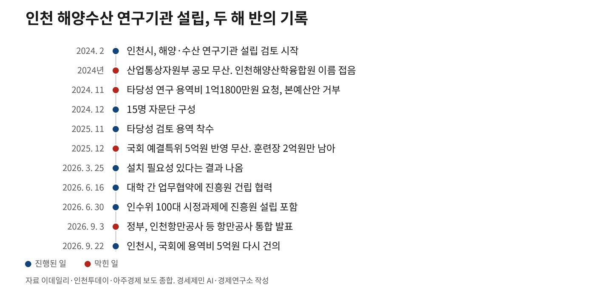
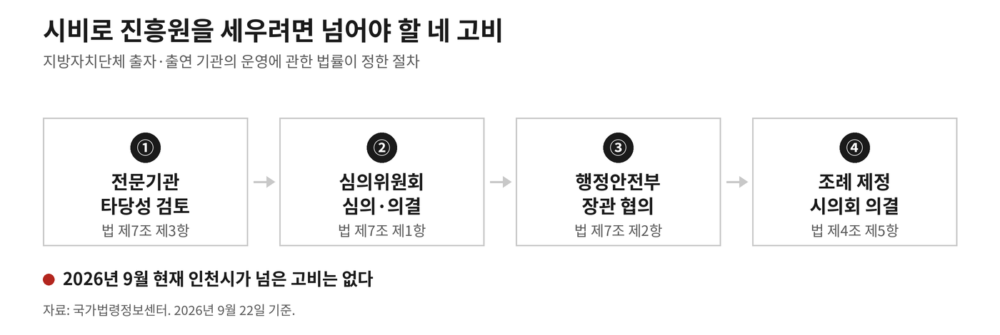
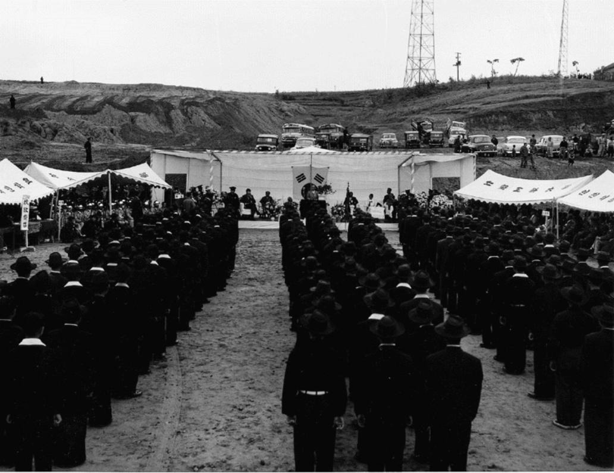
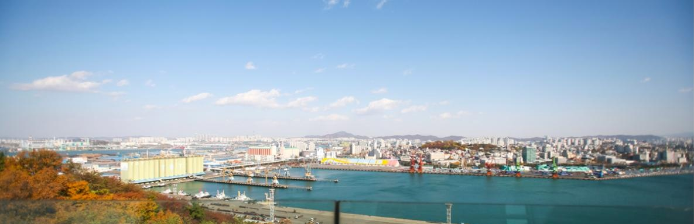

[5극3특 해양주권⑩] 부산은 409억, 인천은 진흥원 용역비 5억도 못 받아
부산 해양과학기술 산학연 협력센터, 9월 14일 개소
인천시, 여드레 뒤 민주당에 용역비 5억원 재건의
진흥원이 손잡을 인천항만공사는 통합 대상
2027년도 정부예산안에 부산시 해양산업 역점사업 네 건은 408억9000만원이 반영됐다. 인천시가 요청한 해양수산진흥원 용역비 5억원은 두 해 잇따라 빠졌다. 부산은 9월 14일 해양 산학연 협력센터도 열었다.
인천에서 진흥원을 세우는 방법은 둘이다. 국비를 받는 쪽은 두 해째 막혀 있고, 시비로 세우는 쪽에는 법이 정한 절차가 넷 남아 있다. 둘 다 아직 시작되지 않은 사실로 짚는다.
1. 이름만 셋이 됐다
인천시는 2024년 2월 유관기관과 해양·수산 연구기관 설립 방안을 검토하기 시작했다. 유정복 시장 임기 중이었다. 처음 붙인 이름은 인천해양산학융합원이다. 산업통상자원부 공모에 기대를 걸고 지었다.
산업부가 추가 공모를 하지 않기로 하면서 그 계획이 무산됐다. 시 관계자는 산학융합원 공모를 하면 참여하려 했으나 추가 공모가 없는 것으로 확인됐다고 밝혔다. 시는 산업부 지원이 막혀 융합원을 세울 수 없다고 판단했다.
다음 이름은 해양수산산학진흥원이다. 부처를 산업통상자원부에서 해양수산부로 바꿔 단 이름이다. 타당성 용역이 붙인 기관 이름은 또 달라서 인천해양항만수산산학진흥원이다.
이름이 셋으로 늘어나는 동안 어느 부처가 맡을지는 정해지지 않았다. 검토를 시작한 지 두 해 반이 넘었다.
시는 세울 방식도 여럿을 검토했다. 인천테크노파크에 해양분야를 더하거나 경기·인천 씨그랜트센터를 쓰는 방안이 함께 검토됐다.
2024년 12월에는 해양항공국장과 해양수산협력관과 지역 대학교수와 산업계 관계자 등 15명으로 자문단을 꾸렸다. 이듬해 들어서는 변수가 하나 더 붙었다. 중앙정부가 그 무렵 지방 출자·출연기관 통폐합을 추진하고 있었다.
시 안에서는 비영리 사단법인을 먼저 만들어 놓고 점차 키우자는 의견도 나왔다. 시는 그해 1분기에 협의체를 다시 꾸려 논의하겠다고 했다.
연구를 맡길 곳도 처음에는 다른 데를 봤다. 인천시는 2023년 3월과 4월 한국해양수산개발원과 인천연구원에 타당성 연구를 제안했다.
예산이 드는 일이라 두 제안 모두 반영되지 않았다.

2. 타당성은 3월에 나왔다
인하대학교 산학협력단이 2025년 11월 타당성 검토 용역을 맡았다. 인천 해양수산 산·학·연 거점을 만드는 데 필요한 기본계획을 함께 세우는 용역이다.
결과는 올해 3월 25일 보고회에서 나왔다. 진흥원을 설치할 필요성이 있다는 내용이다. 용역에 붙은 정식 이름은 인천해양수산 산·학·연 거점 조성을 위한 타당성 검토·기본계획 수립 용역이다. 시 해양항공국은 내용을 보완해 3월 말까지 용역을 준공하고 내부 검토를 거쳐 방향을 정하겠다고 밝혔다.
연구 쪽 근거도 있다. 인천연구원은 2023년 정책연구에서 인천항 해양산업클러스터를 다뤘다. 민관과 산학연이 섞인 혁신 네트워크와 교육기관 클러스터링이 필요하다고 짚었다.
보고회에서 근거로 든 수치도 있다. 해양수산부 산하기관은 2025년 12월 기준으로 부산에 열 곳이고 인천에 세 곳이다. 해양 관련 대학 학과도 부산이 66개이고 인천이 7개다. 해양수산부 연구개발 예산도 2020년부터 2025년까지 부산이 7213억원이고 인천이 723억원이다.
국민의힘 소속 유승분 인천시의원은 해양 주권이 부산으로 쏠리는 시점이라고 짚었다. 인천에 해양수산 산업 거점 기관을 만드는 일이 반드시 필요하다고 밝혔다. 인천시가 설립 의지를 분명히 밝히고 해양수산부를 설득하는 행정을 펴야 한다고도 했다.
3. 국비는 두 해째 막혔다
용역비를 국비로 받으려는 시도는 그 전부터 있었다. 인천시는 2024년 11월 타당성 연구 용역비 1억1800만원을 이듬해 본예산안에 넣어 달라고 요청했다. 사업 우선순위에 밀려 거부됐다.
이듬해 요청액은 5억원으로 커졌다. 해양수산부가 요구안을 냈으나 기획예산처 심의에서 걸렸다.
그 돈은 두 해 잇따라 정부예산안에 들어가지 못했다.
같은 정부예산안에 부산 몫은 들어갔다. 기획예산처가 9월 1일 2027년도 정부예산안을 발표하자 부산시는 해양산업 역점사업 네 건이 반영됐다고 밝혔다. 네 건을 합치면 408억9000만원이다.
인천이 요청한 5억원의 82배다.
2025년 12월 국회 예산결산특별위원회는 진흥원 용역비 5억원과 경인지역 종합비상훈련장 용역비 2억원을 함께 반영하려 했다. 2026년도 예산에 남은 것은 훈련장 2억원이다. 훈련장은 영종 세계한상드림아일랜드에 짓는다.

인천시 섬해양정책과는 진흥원 설립이 인천시장직 인수위원회 100대 과제에 들었다며 예산 확보에 최선을 다하겠다고 밝혔다. 맹성규 의원이 위원장을 맡은 민선 9기 인수위원회가 6월 30일 박찬대 당선인에게 넘긴 과제 100개 가운데 하나다.
인천시는 9월 22일 그 5억원을 다시 올렸다. 시청 대회의실에서 연 더불어민주당·인천광역시 예산정책협의회 자리다. 국회 심사에서 더 받아야 할 사업 열두 건에 진흥원 용역비를 넣었다.
열두 건을 합치면 1559억원이고 진흥원 몫은 5억원이다. 2027년도 정부예산안에 담긴 인천 몫은 7조863억원으로 역대 가장 많다.
김민석 더불어민주당 대표와 한병도 원내대표와 인천 지역 국회의원들이 그 자리에 왔다. 박찬대 시장은 인천이 수도권이라는 이유로 균형발전 지원에서 소외되면서도 각종 규제는 적용받는 이중소외를 겪고 있다고 밝혔다.
4. 시비로 가려면 네 고비를 넘는다
국비가 오지 않으면 시비로 세우는 방법이 남는다. 그때는 지방자치단체 출자·출연 기관의 운영에 관한 법률이 정한 절차를 밟는다.
제4조 제1항은 재단법인을 세울 수 있는 경우를 정한다. 지역경제를 발전시키고 지역개발을 활성화하는 데 이바지한다고 인정되는 사업을 하려는 경우다. 진흥원이 여기 해당한다.
제7조 제3항은 설립과 운영의 타당성 검토를 대통령령이 정한 요건을 갖춘 전문기관에 의뢰해 실시하라고 정한다. 전문 인력과 조사·연구 능력을 갖춘 곳이어야 한다.
제7조 제1항은 그 뒤 심의위원회 심의·의결을 거치라고 정한다. 투자와 사업의 적정성, 주민복리에 미치는 효과, 지역경제에 미치는 효과를 공개해야 한다.
제7조 제2항은 조례안을 입법예고하기 전에 시·도지사가 행정안전부장관과 협의하라고 정한다. 제4조 제5항은 설립 목적과 주요 업무와 출연 근거를 조례로 정하라고 한다.
조례는 시의회가 의결한다. 전문기관 검토와 심의위원회 의결과 행정안전부 협의와 조례 제정이 남은 넷이다. 첫 고비인 전문기관 검토부터 시작되지 않았다.
인천시가 넘은 고비는 아직 없다.
유승분 의원은 2024년에 그 길을 이미 말했다. 정부 지원을 받을 수 없으면 인천시 예산만으로도 연구기관을 세우고 지원 규모를 차차 늘려 조직을 키울 수 있다고 했다.

5. 손잡을 상대가 통합 대상이다
진흥원은 인천항만공사와 겐트대학교와 인천대학교 등과 산학연 협력망을 꾸릴 예정이었다. 해상풍력과 해양바이오와 해양환경과 기후변화 대응과 해양 인력양성을 그 협력망으로 맡는다는 계획이었다.
그 가운데 하나는 통합 대상에 올랐다.
정부가 9월 3일 발표한 항만공사 통합 대상에 인천항만공사가 들어 있다. 진흥원을 세우자는 말이 처음 나온 2024년 2월에는 그런 논의가 없었다.
대학끼리는 먼저 협약을 맺었다. 인천대학교는 7월 28일 한국해양수산개발원과 업무협약을 맺었다. 해양관광과 연안경제와 해양환경과 해양교육과 국제물류와 항만 분야에서 공동 연구과제를 찾기로 했다.
이인재 인천대 총장은 인천이 항만과 공항과 물류가 모인 대한민국의 관문이라고 밝혔다. 조정희 한국해양수산개발원장은 수도권도 국가균형성장의 한 축을 맡을 수 있다고 했다.
앞서 인하대학교와 국립한국해양대학교도 6월 16일 업무협약에 진흥원 건립 협력을 넣었다.
부산은 9월 14일 문을 열었다. 영도 동삼혁신지구에 지은 해양과학기술 산학연 협력센터다. 이름은 케이오션엑스다. 부지 5868㎡에 연면적 1만385㎡이고 지하 1층과 지상 7층이다.
부산테크노파크와 한국해양수산개발원이 함께 맡아 운영한다.
그 지구에 모인 공공기관과 대학과 연구소의 연구 역량을 기업에 잇는 곳이다. 2027년부터는 해양항만 인공지능 전환 실증센터도 단계로 짓는다.
부산시가 9월 1일 밝힌 해양수도 분야는 다섯 건에 4719억9000만원이다. 그 가운데 4311억원은 가덕도신공항 건설비다. 해양산업 네 건이 나머지 408억9000만원이다.
여드레 뒤 인천시는 용역비 5억원을 국회에 다시 올렸다.
참고문헌
· 김운수·이명화(2023), 『해양산업클러스터 핵심산업(군) 선정 및 기본구상』, 정책연구, 인천연구원, 연구기간 2023.01.01.~08.31. https://www.ii.re.kr/base/board/read?boardManagementNo=14&boardNo=15732&menuLevel=2&menuNo=76
· 『지방자치단체 출자·출연 기관의 운영에 관한 법률』 제4조 출자·출연기관의 설립, 제7조 설립의 타당성 검토 등. 국가법령정보센터, 2026.09.22. 조회.
· 이종일(2024), "해양연구기관 설립 갈팡질팡…대책 없는 인천시", 『이데일리』, 2024.11.13. https://edaily.co.kr/News/Read?mediaCodeNo=257&newsId=05621926639085392
· 현동민(2025), "인천 해양수산산학진흥원 설립 난항... 재원·제도 기반 미흡", 『인천투데이』, 2025.02.04. https://www.incheontoday.com/news/articleView.html?idxno=262082
· 김도윤(2025), "인천해양수산진흥원 건립 등 해양산업 '안갯속'··· 예산 확보 절실", 『인천투데이』, 2025.12.01. https://www.incheontoday.com/news/articleView.html?idxno=311762
· 김도윤(2025), "선원 훈련장 예산 확보, 해양수산진흥원 '미반영'··· 인천 해양산업 '반쪽' 성과", 『인천투데이』, 2025.12.03. https://www.incheontoday.com/news/articleView.html?idxno=311887
· 김도윤(2026), "인천해양진흥원 설립 필요성 '확인'··· 해양산업 부산 쏠림 대안 부각", 『인천투데이』, 2026.03.25. https://www.incheontoday.com/news/articleView.html?idxno=316923
· 이종선(2026), "인하대-한국해양대 MOU···인천 해양수산산학진흥원 기반 마련", 『인천투데이』, 2026.06.17. https://www.incheontoday.com/news/articleView.html?idxno=320212
· "인하대-국립한국해양대, 해양 분야 협력체계 구축 협약", 『아주경제』, 2026.06.17. https://www.ajunews.com/view/20260617111430871
· 김종하(2026), "민선 9기 인천시장직 인수위 해단… 박찬대 당선인에게 '100대 시정과제' 전달", 『중부일보』, 2026.06.30. https://www.joongboo.com/news/articleView.html?idxno=363730163
· 이한기(2026), "박찬대 시장에게 '압도적 성장, 행복한 변화' 100대 시정과제 전달", 『오마이뉴스』, 2026.06.30. https://www.ohmynews.com/NWS_Web/View/at_pg.aspx?CNTN_CD=A0003247496
· 조충현(2026), "KMI-인천대, 수도권 해양수산 협력 본격화… 피지컬AI 항만 공동연구 나선다", 『아시아경제』, 2026.07.29. https://view.asiae.co.kr/article/2026072915380702562
· 신정훈(2026), "부산 동삼혁신지구 '해양 특화 산학연 협력 플랫폼' 본격 가동", 『서울신문』, 2026.09.14. https://www.seoul.co.kr/news/society/2026/09/14/20260914500098
· 남동현(2026), "부산시, 해양산학연 협력센터 K-OceanX 개소…혁신 생태계 조성", 『뉴스핌』, 2026.09.14. https://www.newspim.com/news/view/20260914000017
· 권병석(2026), "'해양연구 성과, 기업 연계'… 영도에 산학연 협력거점", 『파이낸셜뉴스』, 2026.09.14. https://www.fnnews.com/news/202609141858371597
· 김옥빈(2026), "부산시, 해양과학기술 산학연 협력센터 'K-OceanX' 개소", 『국제뉴스』, 2026.09.14. https://www.gukjenews.com/news/articleView.html?idxno=3694498
· "부산시 '해양수도' 국비 4720억원…91%가 가덕도신공항", 『프라임경제』, 2026.09.02. 네이트 뉴스 중계본으로 확인. https://m.news.nate.com/view/20260902n31085
· 김도윤(2026), "해양산학진흥원 설립 '난항'···인천 해양산업 컨트롤타워 '공백' 장기화", 『인천투데이』, 2026.09.11. https://www.incheontoday.com/news/articleView.html?idxno=323518
· 박선홍(2026), "인천시, 민주당에 국비 1559억원 추가 확보·핵심 현안 지원 요청", 『THE인천』, 2026.09.22. https://www.theicn.co.kr/news/articleView.html?idxno=11327
· 유수종(2026), "인천시, 국회 심의 앞두고 추가 국비 확보전…1559억·입법과제·핵심현안 지원 요청", 『필드뉴스』, 2026.09.22. https://www.fieldnews.kr/news/articleView.html?idxno=31740
· 박규호(2026), "인천시, 민주당에 인천e음·행정체제 개편 등 국비 1559억 요청", 『인천투데이』, 2026.09.22. https://www.incheontoday.com/news/articleView.html?idxno=324070
#5극3특해양주권 #인천해양수산진흥원 #해양수산산학진흥원 #인천항만공사 #지방출자출연기관법 #예산정책협의회 #부산해양과학기술산학연협력센터 #인천연구원 #인수위100대과제 #항만공사통합
